Quote Break: I captured a few quotes from the trip which I will sprinkle through the page. Our first came from a friend we met on the trip. On our first flight out of OKC we sat next to Bernd, a German aircraft designer who now lives in Norman, OK. As it happened, he also sat directly behind us on the 9 1/2 hour flight overseas to London. We ended up hanging out in the Dallas airport together for awhile as well. He was a very nice guy. When we asked him about life in Oklahoma he said he enjoyed it very much. However, he felt the best way to describe how he 'fits in' is that he, "drives a Vespa scooter in a Harley world."
Getting there was a bit of an ordeal. We left OKC a little after noon on Saturday, May 14. We first flew to Dallas, then to London Gatwick, then finally we arrived in Rome at 11 am on Sunday the 15th. There were difficulties in leaving the airport but we got settled into our hotel around 3pm, which is when the really difficult part started - staying awake until 8:30pm. We really wanted to get our sleep schedule straightened out as soon as possible, so we decided 8:30 was the earliest bed time we could have in order to sleep through the night. We did some tourist things, had a nice meal, and generally counted the minutes until we would be able to go to sleep. I'm afraid I finally rebelled around 8 and gave in to oblivion.
Quote Break: This quote was regarding our first driver who used huge gestures when getting into arguments with nearly every car on the walk from the airport to the van. Eric leaned toward me and asked, "Is he drunk?" I, without the least intention of being funny, said, "No, I think he's just Italian."

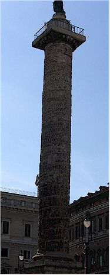
the Hotel Accademia and would recommend it to anyone.
of marble, constructed after M.A.'s death in AD 180.


commemorates his victories over barbarian tribes of the Danube.
imported sundial, but became inaccurate after 50 years.
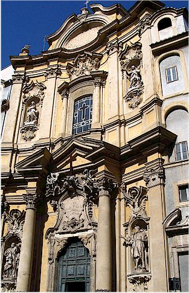
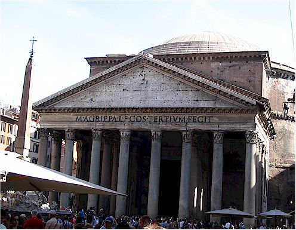
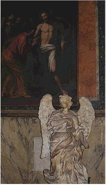

ranging from the tomb of Raphael to those of the kings
of modern Italy.
and pumice over a temporary wooden framework. The walls of the
drum supporting the dome are 19 feet thick.


buttresses, distributing the weight of the dome.

I liked the dudes in the circles on top of this building.

It is an Egyptian column balanced on the back of an elephant.
Designed by Bernini, the elephant (an ancient symbol of
intelligence and piety) was chosen as the embodiment of the
virtues on which Christians should build true wisdom.
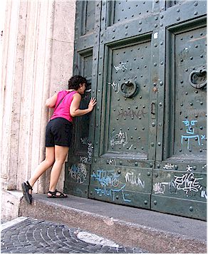
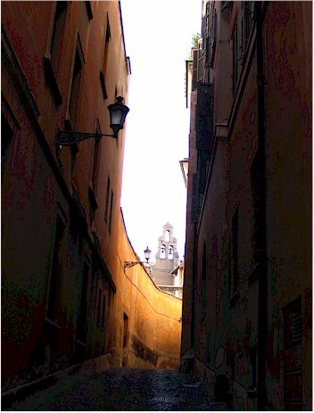
which "jumped" out at us as we passed a narrow alleyway.


So often you find yourself being amazed by what they
spent so much time and effort decorating.


paintings or other things like this.
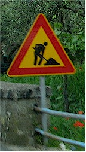

(This seems to indicate the speed at which construction projects are finished.)
On a walk though town we saw a celebrity! Here's that one guy with his shovel up close in person. Cool!

Built between 1889 and 1910 to house the national law courts.


Views of Vatican City and the Tiber river

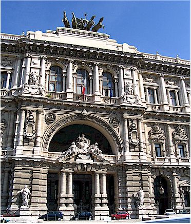
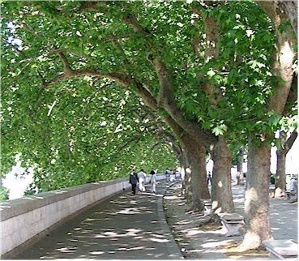

then it has had many roles: as part of Emperor Aurelian's city wall, as a medieval citadel
and prison, and as the residence of the popes in times of political unrest. From the
dank cells in the lower levels to the fine apartments of the Renaissance popes above,
a 58 museum covers all aspects of the castle's history.
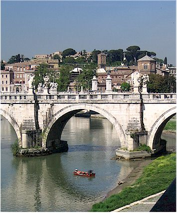

that water was nasty.

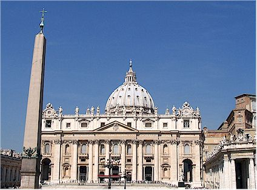
a) You cannot get inside St. Peter's Bascilla wearing shorts or tank tops
Eric had shorts, I had a tank top - we were practically thrown from the premises.
b) You should get in line by 8am if you want to see the Sistine Chapel
By mid-morning, entire tour buses have disgorged their passengers straight into the line.
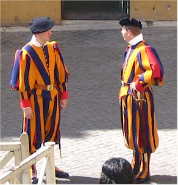
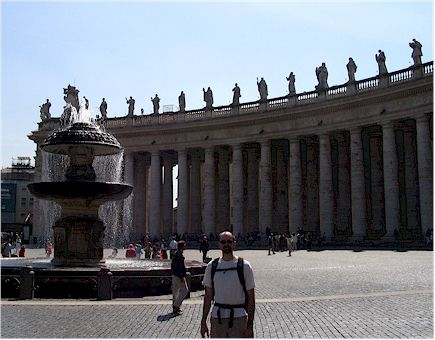
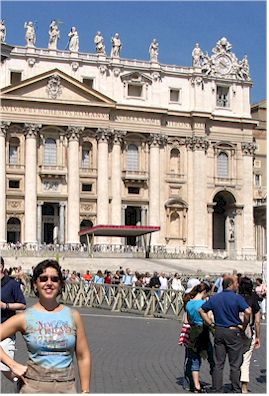


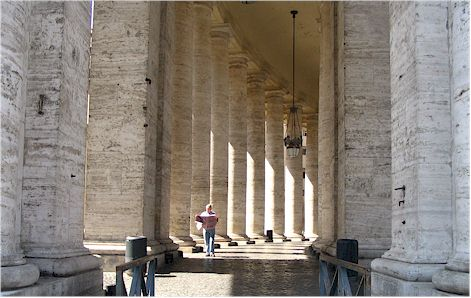

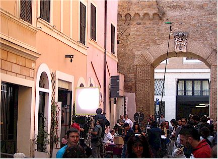


Various Statues
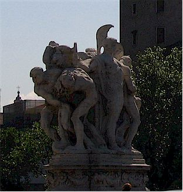

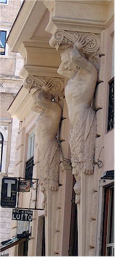
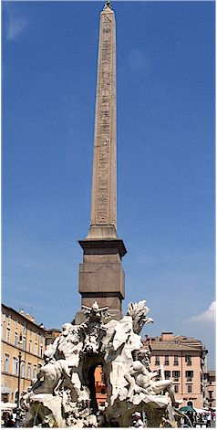
this Egyptian obelisk was designed by Bernini.
The Piazza Navona - Rome's most beautiful Baroque piazza follows the shape
of
Domitian's Stadium which once stood on this site.

One of the fountains in the Piazzo Navona - The Fontana del
Moro

in the Fontana del Quatro Fiumi
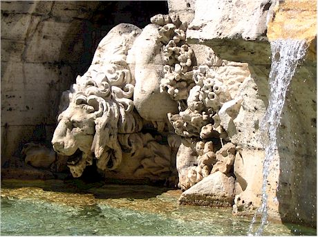
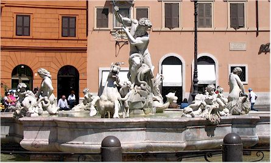
Drinking Lion. We look just like this when we do the exercise.
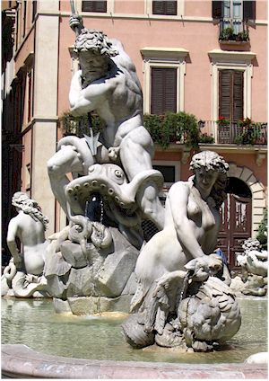
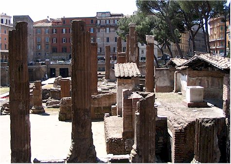
rebuilding in the 1920's. They are among the oldest to be found in Rome. They are
creatively named temples A, B, C, and D. The oldest dates from the 3rd century B.C.
It now serves as a very large feral cat house.
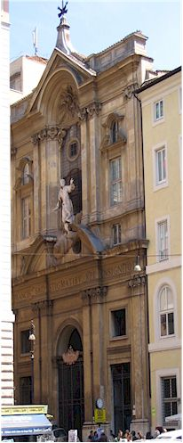

to cover buildings that were under construction. They air-brush
a picture of a completed building on a screen to hide the work.

Victor Emmanuel Monument in Piazza Venezia - Known as Il
Vittoriano, this monument was
begun in 1885 and inaugurated in 1911.
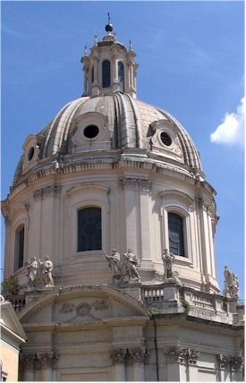
Close-up of the statues on top of the church dome.

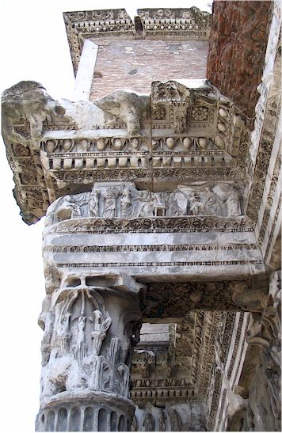
Remains of a building near Trajan's Markets in the Forum area


The emperors held shows here that often began with animals performing circus tricks. Then came the gladiators, who fought one another to the death. When one was killed, attendants dressed as Charon, the mythical ferryman of the dead, carried the body off on a stretcher. Sand was then raked over the blood to make ready for the next bout. A badly wounded gladiator would surrender his fate to the crowd. The thumbs up sign from the emperor meant that he could live, otherwise things were pretty bleak.
It used to have a velarium, which was a huge awning to shade spectators from the sun. The exits were called "vomitoriums."
The Arch of Constantine
This triumphal arch was dedicated in AD 315 to celebrate
Constantine's
victory three years before over his co-emperor, Maxentius.
Constantine
claimed he owed his victory to a vision of Christ.


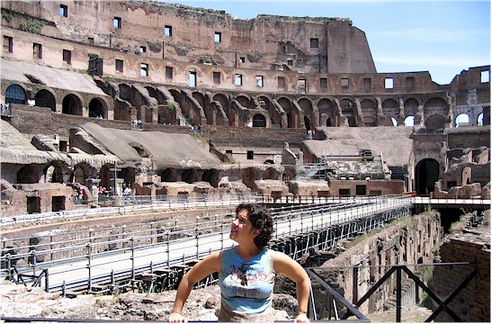
Roman gladiators were usually slaves, prisoners of war, or condemned criminals.
Most were men but there were a few female gladiators.
Here I contemplate the idea of being a gladiator. Nah, I don't think it's for me.
were kept. They had ramps, winches, and trap doors which were used
to make dramatic entrances into the stadium.

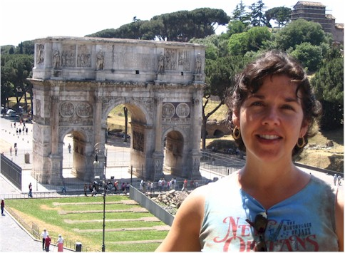
Taken from the Colosseum, looking toward the Arch of Constantine with the hills of the
Forum behind me.
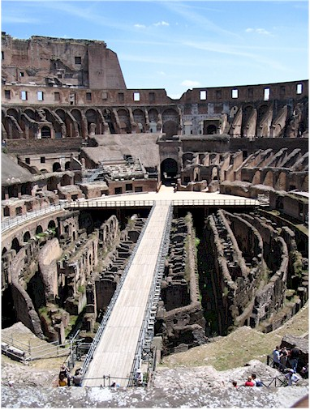

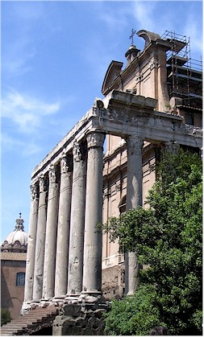

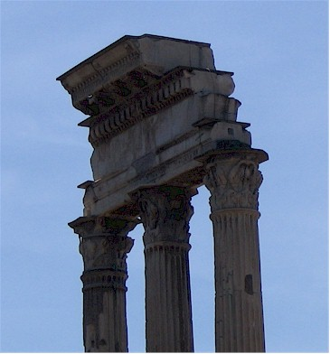
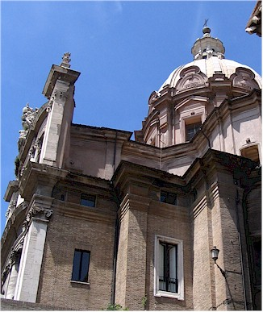


where the Roman Senate used to meet.
It dates from AD 608.
many pictures - which is perfect for the average American's short attention span. Most of the info I provide here came from those books.


where these pictures in this section came from exactly.
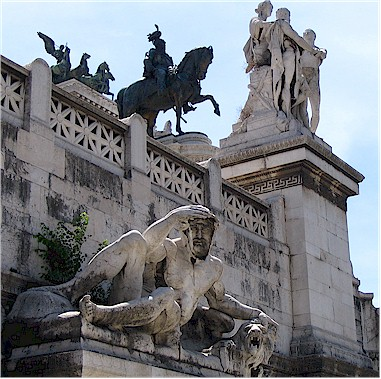
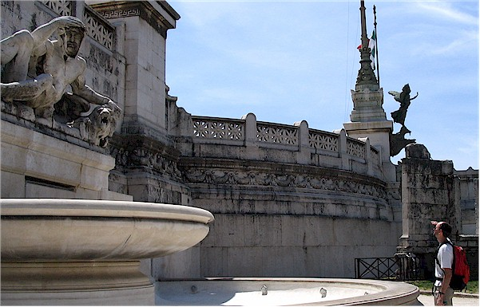
Eric, giving the statue a taste of it's own medicine.
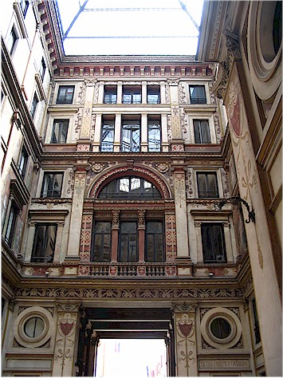
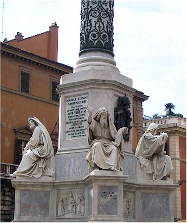
It was beautiful and very cool inside.
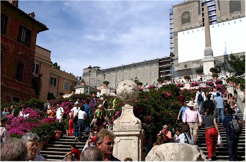
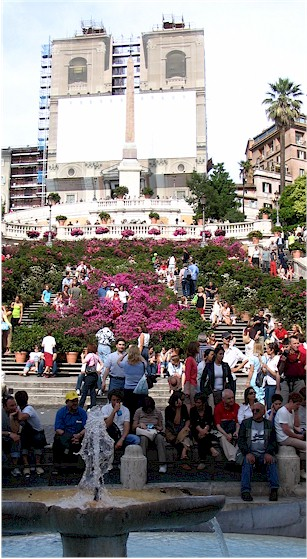
Quote Break: We stopped touristing at this point to rest for
a couple of hours in the afternoon.
Then, when I suggested we take off again to view more sights, I got the
following quote from Eric,
"Are you actually going to make me walk again to see more old
crap?"
So, I went to see the Spanish Steps by myself. Here they are above with the azaleas in full bloom.


Were were amazed with the relatively small size of
Rome. We walked to everything we wanted to see with no trouble at
all.
It seemed like we stumbled into something amazing around every corner and
enjoyed lots of street-side cafes, random street musicians, and friendly
people.
Our time in Rome ended on Tuesday. We took a train to
Naples where we then got a ride to the town of Sorrento.
It was a bit overcast on the drive to Sorrento, but that turned out to be the
worst weather we got on the whole trip so we are not complaining.
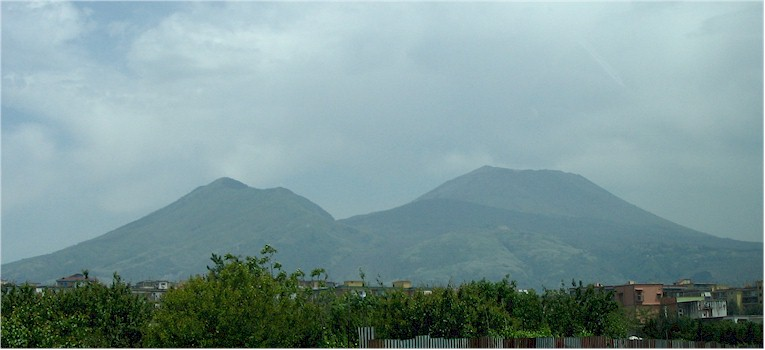
This is Mount Vesuvius (the one on the right)
as it looms over the city of Naples
The father asked us how we liked Italy so far and we told him we were really enjoying it.
He said, "Yes, but doesn't it look as though someone forgot to tidy up after the war?"
Here we are on a 2nd story terrace
enjoying our first lunch in Sorrento
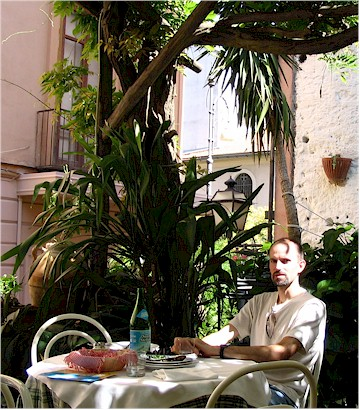
We never realized how spoiled we are to variety in our food here until then. We asked one man if there were any Mexican
or Chinese restaurants and you'd have thought we asked him if he had ever hit his Mother. He asked,
"Why would you want to eat that when our food is so great?"
And yet one more quote while we're on a roll. Eric and I got into the habit of joking to each other at each restaurant, "I'll have the carbs with a side of carbs please."
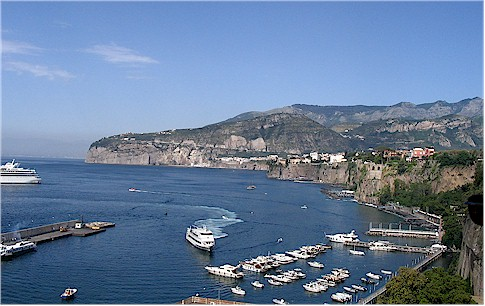

It smelled so wonderful there I cannot describe it. It was amazing how
quiet and peaceful it was in there, even though it was right in town.
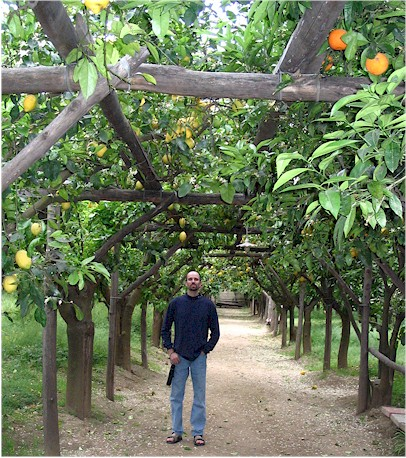

The next part is the part that I was most excited about - Pompeii.
When I was a little girl my mom
told me a story of a little boy in Pompeii on the day of the eruption.
(If that was my Mom's idea of a
bedtime story, maybe that explains why my sister became a DHS child-services
worker. Just kidding Mom!)
That story captured my imagination and for awhile inspired me to want to
become an archeologist.
The idea of ancient life captured frozen in time like that is just
astounding. Most of the artifacts collected
there are in a museum in Naples, but I really wanted to see the actual site in
person. It was huge and amazing.
Sadly, we had a cheap local guidebook that didn't provide much information.
This explains my lack of knowledge about many of the things we saw.


Yes, we know how to take a fascinating picture!


I had really wanted to get a picture looking out over Pompeii with Vesuvius
behind it.
Sadly, it turned out blurry. You get the idea though.
We eavesdropped on a guided tour and heard that this was
an area used for measuring
things. That stone on the bottom could be slid along to make a
'cup', then you put your
container underneath and slide the stone away to dump that much into your
pot.
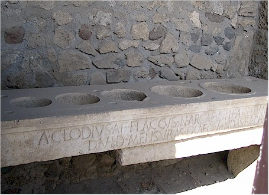


From the Temple of Apollo.

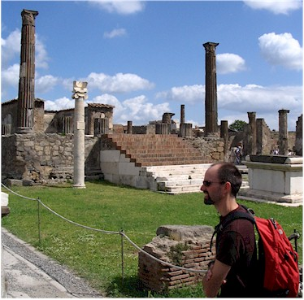

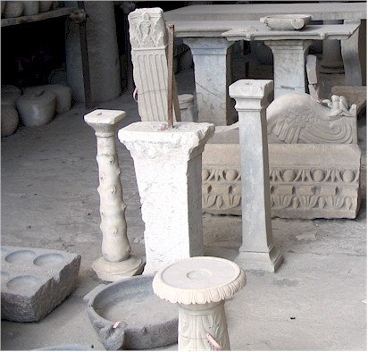
that were excavated from the site.
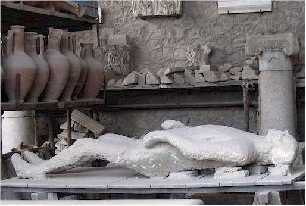

designed to hold these pointy-bottom pots shown above.


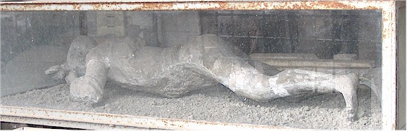
I don't know if these were plaster casts or the real thing,
but it certainly was disturbing to
see them laying around the storehouse with the bits of pottery.
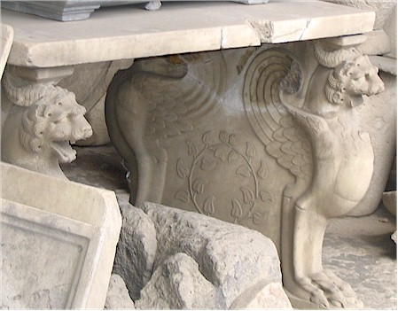

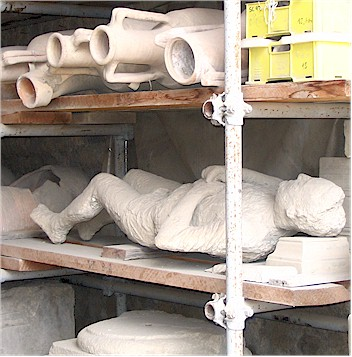
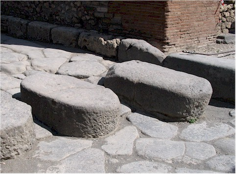
but the cart wheels could pass through. (You'd have to be a good driver though!)
This is the floor of a bedroom with my toe in the shot for scale.

It's just so strange to put your foot into rut marks made in 79 AD.

in different kinds of stone.
but I'm not 100% sure.
carts from running into it.
The guidebook says of this, "Sepulchre with columns of the stacides."


mourners to mourn the dead. And you thought you had a bad job!


Now we are at the "Villa of the Mysteries," one of
the more famous homes in Pompeii. It was huge and was the site of a lot
of really nice art.
It was actually abandoned before Vesuvius erupted because of an earthquake
that had happened about 10 years earlier.


More of the floor decor. Can you imagine hiring someone to do this in your house
at today's prices? It costs a fortune to do great big tiles!

collapsible closet doors we have in so many of our houses today.

This wall was decorated with Egyptian symbols all around it.
depict the invitation to the Dionysian rites. The pictures are amazing. However,
what I could gather of the story they tell was unpleasant.


The baths were divided into two sections, male and female. In each
section there were three areas: a 'frigidarium', a 'tepidarium', and a 'calidarium.'
I doubt that I have to tell you this is cold, medium, and hot. The
heating and cooling system was achieved by running pipes through cavities in
the walls.
Two shots of the same ceiling in part of the baths.

about 'putting up the lid' was a bit different in those days!
It is called a "small masterpiece of ancient statuary."


I'll bet this was a nice picture before they lifted it for the Naples museum.


in a little portico.
many feet have tread. This was the stairs in the amphitheater.
Taken from the amphitheater, looking at the gladiator's quarters.

get a bad name overseas!)

time I forgot my camera in the room. We went down
to the marina and enjoyed some quiet time watching
the fishermen and other people going about their daily
lives.
Then on the walk back we came across a man making
music boxes and he took us into his studio area to show
us how it was done. It was all very nice.
again, it was a little overcast at that time.

white tags which they use to determine if there are rock slides taking place.

Our first view of Positano.
Our room. The yellow, blue, and white tile floor
was just beautiful.
We had a little balcony and lots of room, it was nice.
We read a quote that described Positano as, "The only city constructed along a vertical, rather than a horizontal axis."
There are very few roads, mostly only steps and steep ramps everywhere. It's very beautiful and quiet.
had two a day that I was aware of, and he may have been sneaking more!
vines so it stays cool.
"highly recommended" rating on the Casazza-meter.
Eric, out on our balcony. You might have to stretch your neck a
little, but you
could get a really nice sea view from there. I did some serious
reading and
relaxing on that balcony.
What, exactly, is supporting the weight of that road?!


There were fortress-like towers all along the coast. Some of them have been turned into little guest houses.
inside it was really beautiful.

a church in Positano


This was one of the last shots I was able to
take before it was too dark for pictures.
We decided to take a bus to the nearby mountain
town of Ravello, then hike back.


The views from the bus were breath-taking until we
remembered the way the roads
were just 'pasted' onto the side of the coast. After that we just
couldn't breathe.


The Villa was where our hike would start.
Looking out over Ravello. It was beautiful, very high up and they
made
you pay to use the public bathrooms.

It's a long way to walk down, this view almost gave us second thoughts!


There was plenty of beautiful scenery to entertain us on our occasional rest stops.
This was a wonderful couple we met along the way. They were the
first in a series of people who assisted in getting us to where we were
going. We were quite lost several times.
We are in a small town called Atrani now. It's like at time capsule to the past.


We were kind of like a baton, being handed off from one guide to the next.


scenery. (Yes, I know, you wonder why I'm not world-famous by now with ideas
like these!) I thought this coastline deserved to be in my "tourist feet" collection.


Later that same day we took a walk to the top part of town. This
picture
is of the cemetery. They put photos of the departed in the little
buildings,
it's very nice.


This is a picture of Naples from Eric's hotel. This is the point
where I left him and
he joined up with his field trip.

That's about all I know about the rest of these pictures.
Maybe someday I can talk Eric into captioning them.


That's it! Two weeks in Italy. It's a truly beautiful, friendly place.